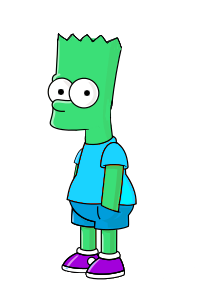

Bart Bash Records
Home to the records of Bart Bash!
The records are separated into three categories: Highscore, Single Drop, and Low Score.
All scores MUST be provided with a image or video of the record.
CLICK HERE TO SUBMIT A RECORD
Note: Scores will need to be review before their addition to the leaderboard!